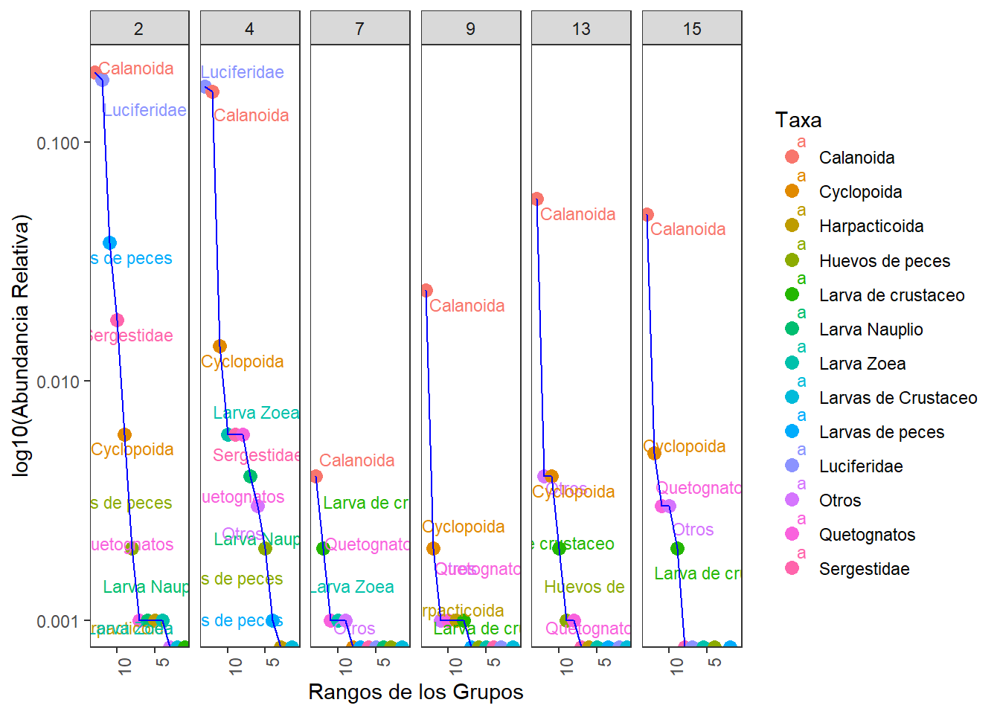
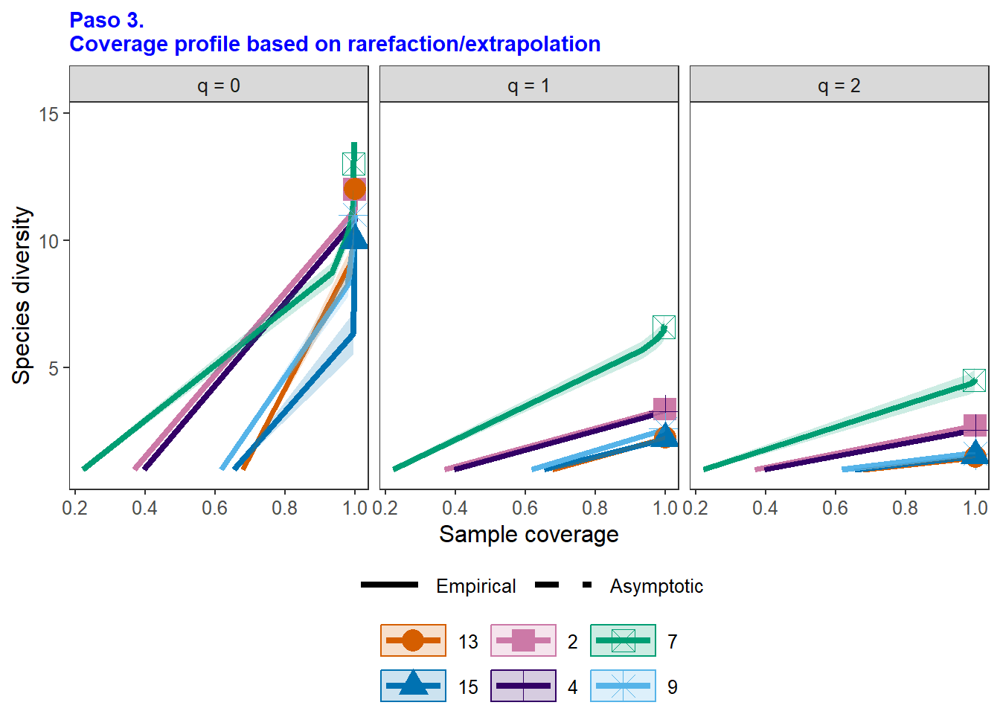

Resumen
El presente ejercicio consiste en el procesamiento inicial de los datos entregados por el profesor Lenin Florez para dar respuesta al siguiente requerimiento:
12. Results. It is suggested to calculate Shannon-Wiener diversity index and Pielou evenness index values to assess zooplankton diversity.
Para este requerimiento, planteo realizar la propuesta de Borcard et al. (2018), con estimadores clásicos de diversidad alfa y de Chao et al. (2020) quienes incorporan a estos parámetros en su propuesta de diversidad en cuatro pasos.
Paso a paso para la organización de los datos de los taxones y ambientales.
Paso 1. Cargar Librerías
Librerías requeridas para el análisis de diversidad alfa.
Paso 2. Base de datos de los taxones
La base de datos con los 40 taxones se llamará biol. La base con con las 18 variables ambientales se llamará amb y se cargará más adelante (Tabla 1).
| Estación | Tamaño | Estrato | Grupos | Abundancia | Temperatura | Salinidad | Densidad |
|---|---|---|---|---|---|---|---|
| 2 | 250 | Superficie | Quetognatos | 0 | 30.29749 | 34.69981 | 21.417828 |
| 2 | 250 | Superficie | Sergestidae | 0 | 29.40959 | 25.83323 | 15.085254 |
| 2 | 250 | Superficie | Luciferidae | 0 | 29.59008 | 12.38513 | 5.729643 |
| 2 | 250 | Superficie | Calanoida | 32 | 30.29749 | 34.69981 | 21.417828 |
| 2 | 250 | Superficie | Cyclopoida | 4 | 29.40959 | 25.83323 | 15.085254 |
| 2 | 250 | Superficie | Harpacticoida | 2 | 29.59008 | 12.38513 | 5.729643 |
La Tabla 2 muestra los nombres abreviados de los taxones, …
| Estación | Clnd | Cycl | Hrpc | Hvdp | LrvN | LrvZ | Lrdc | LrdC | Lrdp | Lcfr | Otrs | Qtgn | Srgs |
|---|---|---|---|---|---|---|---|---|---|---|---|---|---|
| 2 | 13300 | 428 | 50 | 168 | 57 | 44 | 0 | 16 | 2562 | 12411 | 30 | 86 | 1219 |
| 4 | 11006 | 947 | 33 | 135 | 282 | 406 | 0 | 0 | 98 | 11659 | 234 | 385 | 397 |
| 7 | 288 | 29 | 1 | 6 | 12 | 59 | 124 | 1 | 25 | 20 | 48 | 74 | 24 |
| 9 | 1615 | 125 | 45 | 20 | 0 | 10 | 38 | 0 | 27 | 6 | 93 | 81 | 8 |
| 13 | 3911 | 237 | 18 | 92 | 12 | 13 | 110 | 0 | 12 | 9 | 250 | 81 | 27 |
| 15 | 3362 | 307 | 4 | 2 | 0 | 4 | 112 | 0 | 0 | 5 | 179 | 202 | 16 |
| Grupos | Abreviaturas |
|---|---|
| Calanoida | Clnd |
| Cyclopoida | Cycl |
| Harpacticoida | Hrpc |
| Huevos de peces | Hvdp |
| Larva Nauplio | LrvN |
| Larva Zoea | LrvZ |
| Larva de crustaceo | Lrdc |
| Larvas de Crustaceo | LrdC |
| Larvas de peces | Lrdp |
| Luciferidae | Lcfr |
| Otros | Otrs |
| Quetognatos | Qtgn |
| Sergestidae | Srgs |
Paso 3. Diversidad alfa
3.1 Estimadores generales
| Estación | q=0 | q=1 | q=2 | Equidad= J | Shannon =H |
|---|---|---|---|---|---|
| 2 | 12 | 3.4 | 2.7 | 0.49 | 1.21 |
| 4 | 11 | 3.3 | 2.5 | 0.49 | 1.19 |
| 7 | 13 | 6.6 | 4.5 | 0.74 | 1.89 |
| 9 | 11 | 2.6 | 1.6 | 0.40 | 0.95 |
| 13 | 12 | 2.2 | 1.5 | 0.32 | 0.81 |
| 15 | 10 | 2.2 | 1.5 | 0.34 | 0.79 |
–
3.2 Curvas RAD (Estaciones, Estratos, Tamaños)
3.2.1 RAD por Estaciones

3.2.2 RAD por Estratos
`summarise()` has grouped output by 'Estrato'. You can override using the
`.groups` argument.
3.2.3 RAD por Tamaños
`summarise()` has grouped output by 'Tamaño'. You can override using the
`.groups` argument.
3.3 Alfa en cuatro pasos (Chao et al. 2020).
3.3.1 Alfa por Estaciones
Calculo de los cuatro pasos por Estaciones
Insumos del análisis
[1] "STEP 1. Sample completeness profiles"
[2] "STEP 2b. Observed diversity values and asymptotic estimates"
[3] "STEP 3. Non-asymptotic coverage-based rarefaction and extrapolation analysis"
[4] "STEP 4. Evenness among species abundances of orders q = 1 and 2 at Cmax based on the normalized slope of a diversity profile"
Paso 1. Perfil de completitud
| Assemblage | q = 0 | q = 1 | q = 2 |
|---|---|---|---|
| 13 | 1.00 | 1 | 1 |
| 15 | 1.00 | 1 | 1 |
| 2 | 1.00 | 1 | 1 |
| 4 | 1.00 | 1 | 1 |
| 7 | 0.93 | 1 | 1 |
| 9 | 1.00 | 1 | 1 |
Paso 2. Perfil asintótico
[1] "Assemblage" "qTD" "TD_obs" "TD_asy" "s.e."
[6] "qTD.LCL" "qTD.UCL" | Ensamblaje | Estimador | D.Observada | D.Estimada | Sin.Det |
|---|---|---|---|---|
| 13 | q=0, Riqueza | 12 | 12.00 | 0 |
| 13 | q=1, Shannon | 2 | 2.24 | 0 |
| 13 | q=2, Simpson | 1 | 1.47 | 0 |
| 15 | q=0, Riqueza | 10 | 10.00 | 0 |
| 15 | q=1, Shannon | 2 | 2.21 | 0 |
| 15 | q=2, Simpson | 2 | 1.53 | 0 |
| 2 | q=0, Riqueza | 12 | 12.00 | 0 |
| 2 | q=1, Shannon | 3 | 3.36 | 0 |
| 2 | q=2, Simpson | 3 | 2.72 | 0 |
| 4 | q=0, Riqueza | 11 | 11.00 | 0 |
| 4 | q=1, Shannon | 3 | 3.28 | 0 |
| 4 | q=2, Simpson | 3 | 2.53 | 0 |
| 7 | q=0, Riqueza | 13 | 14.00 | 1 |
| 7 | q=1, Shannon | 7 | 6.65 | 0 |
| 7 | q=2, Simpson | 5 | 4.53 | 0 |
| 9 | q=0, Riqueza | 11 | 11.00 | 0 |
| 9 | q=1, Shannon | 3 | 2.60 | 0 |
| 9 | q=2, Simpson | 2 | 1.62 | 0 |
Paso 3. Perfil no asintótico
| Cmax = 1 | q = 0 | q = 1 | q = 2 |
|---|---|---|---|
| 13 | 11.88 | 2.23 | 1.47 |
| 15 | 9.75 | 2.21 | 1.53 |
| 2 | 11.55 | 3.36 | 2.72 |
| 4 | 10.75 | 3.26 | 2.53 |
| 7 | 13.86 | 6.63 | 4.52 |
| 9 | 10.93 | 2.58 | 1.62 |
Paso 4. Patrón de uniformidad
| Cmax = 1 | Pielou J' | q = 1 | q = 2 |
|---|---|---|---|
| 13 | 0.32 | 0.11 | 0.04 |
| 15 | 0.35 | 0.14 | 0.06 |
| 2 | 0.49 | 0.22 | 0.16 |
| 4 | 0.50 | 0.23 | 0.16 |
| 7 | 0.72 | 0.44 | 0.27 |
| 9 | 0.40 | 0.16 | 0.06 |
Paso 2. Figura del Perfil de rarefacción y de extrapolación
Paso 4. Figura del Perfil no asintótico

3.3.2 Alfa por Estratos
Calculo de los cuatro pasos por Estaciones
Insumos del análisis
[1] "STEP 1. Sample completeness profiles"
[2] "STEP 2b. Observed diversity values and asymptotic estimates"
[3] "STEP 3. Non-asymptotic coverage-based rarefaction and extrapolation analysis"
[4] "STEP 4. Evenness among species abundances of orders q = 1 and 2 at Cmax based on the normalized slope of a diversity profile"
Paso 1. Perfil de completitud
| Assemblage | q = 0 | q = 1 | q = 2 |
|---|---|---|---|
| Profundidad | 1 | 1 | 1 |
| Superficie | 1 | 1 | 1 |
Paso 2. Perfil asintótico
| Ensamblaje | Estimador | D.Observada | D.Estimada | Sin.Det |
|---|---|---|---|---|
| Profundidad | q=0, Riqueza | 13 | 13.00 | 0 |
| Profundidad | q=1, Shannon | 2 | 2.31 | 0 |
| Profundidad | q=2, Simpson | 1 | 1.46 | 0 |
| Superficie | q=0, Riqueza | 13 | 13.00 | 0 |
| Superficie | q=1, Shannon | 2 | 2.25 | 0 |
| Superficie | q=2, Simpson | 2 | 1.56 | 0 |
Paso 3. Perfil no asintótico
| Cmax = 1 | q = 0 | q = 1 | q = 2 |
|---|---|---|---|
| Profundidad | 13 | 2.31 | 1.46 |
| Superficie | 13 | 2.25 | 1.56 |
Paso 4. Patrón de uniformidad
| Cmax = 1 | Pielou J' | q = 1 | q = 2 |
|---|---|---|---|
| Profundidad | 0.33 | 0.11 | 0.04 |
| Superficie | 0.32 | 0.10 | 0.05 |
Paso 2. Figura del Perfil de rarefacción y de extrapolación
Paso 4. Figura del Perfil no asintótico

3.3.3 Alfa por Tamaños
Calculo de los cuatro pasos por Estaciones
Insumos del análisis
[1] "STEP 1. Sample completeness profiles"
[2] "STEP 2b. Observed diversity values and asymptotic estimates"
[3] "STEP 3. Non-asymptotic coverage-based rarefaction and extrapolation analysis"
[4] "STEP 4. Evenness among species abundances of orders q = 1 and 2 at Cmax based on the normalized slope of a diversity profile"
Paso 1. Perfil de completitud
| Assemblage | q = 0 | q = 1 | q = 2 |
|---|---|---|---|
| 250 | 1 | 1 | 1 |
| 500 | 1 | 1 | 1 |
Paso 2. Perfil asintótico
| Ensamblaje | Estimador | D.Observada | D.Estimada | Sin.Det |
|---|---|---|---|---|
| 250 | q=0, Riqueza | 13 | 13.00 | 0 |
| 250 | q=1, Shannon | 3 | 3.22 | 0 |
| 250 | q=2, Simpson | 2 | 1.90 | 0 |
| 500 | q=0, Riqueza | 12 | 12.00 | 0 |
| 500 | q=1, Shannon | 1 | 1.36 | 0 |
| 500 | q=2, Simpson | 1 | 1.11 | 0 |
Paso 3. Perfil no asintótico
| Cmax = 1 | q = 0 | q = 1 | q = 2 |
|---|---|---|---|
| 250 | 13 | 3.22 | 1.90 |
| 500 | 12 | 1.36 | 1.11 |
Paso 4. Patrón de uniformidad
| Cmax = 1 | Pielou J' | q = 1 | q = 2 |
|---|---|---|---|
| 250 | 0.46 | 0.18 | 0.08 |
| 500 | 0.12 | 0.03 | 0.01 |
Paso 2. Figura del Perfil de rarefacción y de extrapolación
Paso 2. Figura del Perfil no asintótico